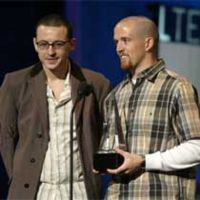

Hybrid Theory
 De: La Frikipedia, la enciclopedia extremadamente seria.
De: La Frikipedia, la enciclopedia extremadamente seria.

|
¡¡¡ARGH, MIS OJOS!!!
Este artículo está escrito así por algún motivo. Puede contener masivas faltas de ortografía u otros horrores lingüísticos.
|
De la serie Discos discos y más discos:
La primera versión del disco, pero lo cambiaron porque no querian tener un Dia Verde
| Género:
|
Rapmetalerico mierdoso
|
| Autor/es:
|
Linkin King Park
|
| Número de canciones:
|
Unas pocas
|
| ¿Recomendable?:
|
Este si
|
| Fecha de publicación:
|
Cuando nacio un wombat
|
| Copias vendidas:
|
Las mismas que la sangre de un Hibrido.
|
| Mejor canción:
|
In The my Face
|
| Notas:
|
¡Esto es el final!
|
Cuando se creia que MecreomuyguayTV no podia inventarse una mierda mas chingona aparece en el año 2000 el disco mas fumado de mierda original de ese año, mes, bueno vale dia, joder entendido: hora. De la para nada famossisisisisisisisisisisisisisisisisisisisisisiissiisisisisisisisisma banda LINK IN THE PARK, el unico, el original: Hybridacion Theorica.
¿Qué significa el título?
El nombre se lo sacaron cuando el pobre Mike El Que Maneja Sin Su Honda vio al líder de la banda, Link, follandose a una rana, a Zelda y a la IP Anonima que lee este articulo y ,como los de la raza de Link follan y a los 5 segundos entran en labor de parto (si, es hora de que usemos terminos medicos reales, apesar de que eso significa que le salga un carajito por el culo) el pobre MC de la banda (Mike, ¿te lo tengo que repetir?) vio lo que salio y era algo muy asqueroso (si mas asqueroso que el nemesis cagando) y le dio tanta rabia que le pidio la renuncia pacificamente (callendole a ostias en los huevos) y Link abandono la banda; posteriormente, durante una reunion de composicion, Mike recordo el trauma que le dejaron las imagenes de Link pariendo a un sapoIPZelda y le entro un ataque de mariquera acompañada de epilepsia cronica un ataque de ira, y juro nunca volver a hablar, pensar, orar, comer, fumar, fantasear o ejecutar algo relacionado con el sexo, por lo tanto la banda dejo la orientacion reggaemierdera (esa orientacion fue idea de Link, por suerte lo expulsaron porque si no el escritor de este articulo estaria tratando constantemente de destruir a Link); al final se decidio por cantar metal (pero su voz de metal era una mierda y ni la Foxxxy queria contratarlos) y entonces se orientaron al Nu Metal, pero cuando Mike se dio el tremendo chinaso cantando en frente de sus amigos una de sus canciones tipo dolores estomacales se dio cuenta de que necesitaba a un cantante de Metal, pero a falta de presupuesto contrato a lo primero que encontro que fuera barato la puta de la esquina de su casa y ese era Chester " el de los Cheetos" Benacanintong, este estaba sumamente desesperado de encontrar un trabajo en donde no tuviera que oler a queso todo el puto dia, asi que acepto la oferta de Mike; y para que Mike no fuera un puto inutil inservible para la banda, aprendio a tocar los siguientes instrumentos:

A Chester si que le cayó bien ese trabajo de tener embolias cronicas y ganar tremenda pasta por ello.
- guitarra
- piano
- bajo
- mierda
- claxon
- bateria
- feats
- silbatos
- matracas
- radios
- potes de soda
- a tu mama
- cuatro
- acordion
- ¿ya te dije que a tu mama?
- el teclado
- el mouse
- el monitor
- el CPU
- el skateboard
- el scooter
- el violin
- el violin (pero de axila)
- al gato
- al perro
- al pollo
- a la polla (a esa la sabia tocar de nacimiento)
- ¿en serio no puedo recordar si te dije que a tu mama tambien?
- y entre otros, a tu mama
Después de eso tomo un curso para hablar cualquier puto idioma y aprendio que era bueno para el rap, y entonces la banda Link In The Park creo su propia fusion de musica rock, Synth rock, Nu metal, rap e instrumental; y por fin después de toda esa maraña de patrañas e infracciones al Copyriiiigt, ya saben porque el puto disco se llama asi, porque es una mezcla anormal de toda musica en el mundo (no, el reggaeton no cuenta porque eso no es musica).
Canciones de esta weonaa alucinogena
Por supuesto, el disco tenia que tener musica (que creias que hiba tener, ¿porno?) y por lo tanto, tiene canciones, y las canciones tienen nombre, y se supone que deberia dejar de escribir estas pelotudeses y hacer mis labores para con la sociedad y el planeta (cagar, comer, dormir, contaminar y no ser de utilidad para la sociedad, venga que por eso escribo en frikipedia) asi que aca estan las canciones que tiene el disco y otras que no pasaron (todas estaban inspiradas en los traumas de Mike pero solo unas fueron catalogadas apropiadas y las otras terminaron junto a las copias grabadas del Mein Kapmf):
Las que salieron al publico
- PAPERECUTI: ahi se creen Pavaroti y se ponen a cantar tipo opera (les dije que tocaban toda musica en el mundo, el reggaeton no cuenta por no ser musica, cuantas veces me lo vas a preguntar ¿eres un reggaetonero?)
- ONE MORE STEP CLOSER TO FUCK YOU: aqui Mike revela lo que paso con la pobre Zelda, la pobre rana y la no tan pobre IP Anonima.
- WITH YOU OR WITHOUT YOU WE'RE GONNA ROCK THE WORLD: ahi le dicen al devastado Link que no lo nesecitan para tener exito; lo curioso es que Link parece tener mas exito apesar de ser un puto necrofilico
- POINTS OF !CESORED!: Mike expresa en unas cuantas lineas de rap lo que vio esa fatidica noche mientras al fondo Chester el de los Cheetos tiene uno de sus dolores estomacales
- CRAWLING TO FUCK YOU: aparicion especial de Link para contar la experiencia desde su punto de vista y su version de la historia
- RUN AWAY BEFORE LINK FUCK US: refleja el temor de Mike a que Link regrese y le haga lo mismo que le hizo a IP Anonima.
- BY MYSELF BECAUSE EVERYONE THINKS I'M SHIT: retrato musical de la experiencia de Mike cuando le decian que era una mierda cantando metal y que nunca lo contratarian.
- IN THE FUCKING END WE MADE IT, WE ARE FUCKING FAMOUS: celebracion de casi 4
horas minutos sobre el exito de la banda.
- A PLACE FOR MY COCK: Link se escabulle al escenario y cuenta las razones por las que creo al ranaIPzelda.
- FORGOTTEN'N'BETRAYED: fue cuando los de seguridad estaban teniendo su "merecido" descanso y dejaron a Link demasiado tiempo en el estudio y Link aprovecha de tener un ataque de dolores estomacales y decirle a la banda cuanto los odia.
- CURE FOR THE ITCHY AND SCRATHCHY BECAUSE BART IS NOT IN TOWN: ahi fue que dejaron al hijo del DJ con muchas golosinas y alcohol y el panel de control de remix; el resultado fue un menjurje raro que nada mas lo entiende E.T el extreaterrestre.
- PUSHING ME OUT: y otra vez Link se cuela al estudio y graba osu version de la historia (que servicio de seguridad tan malo) esta vez sobre como lo expulsaron de la banda.
PD: Se jodieron si quieren que les diga los nombre en español, asi que hagan lo que mejor saben hacer y GUGUENLO
PD de la PD: Cualquier parecido con la realidad u otro articulo es mera mera coincidencia, cualquier parecido hecho a proposito sera reflejado en la ultima parte del articulo.
 Chester (izquierda, ja que comunista) y posiblemente Link operado de cara (derecha, les dije que habia problemas aparte de la zoofilia de Link en la banda) recibiendo el premio a nobel al GRUPO DE ROCK MAS SUBNORMAL DEL MILENIO.
- LINK IS #|~@#€ ZOOFILIC, NECROFILIC, PEDOFILIC, ESTUPIDFILIC MADE OF #~@#€23: el 99.99% de la cancion son groserías el 0.01% es musica de fondo y el -0% es letra decente
- GO AND ~#@€@# YOUR #@|~@#~23 MOTHER YOU @€€#€23 LINK AND DON'T #€~#@€@#5 ME YOU PERVERT SON OF A #~@#: le paso lo mismo que a la anterior pero esta vez fueron puros dolores estomacales (metal).
- LINK YOU'RE FUCKING DRUG ADIO: ahí Mike se fumo algo mientras se cagaba en sus zapatos de skate Adio.
- SCREW UP THE FAME AND MONEY: Mike se retracto automáticamente de cantar esta canción, pero ya era tarde, los de la Cruz Azul ya habian agarrado toda la platica de el disco para enviársela a los victima
rios de los huracanes en la sagradisima counter-estraiclandia.
- LINK GO HOME: expresion anormal de el odio hacia Link; fue eliminada por infracción al copymierda y por tener detalles EXTRA explicitos sobre las razones por las que sacaron a Link de la banda, si sabeis a lo que me refiero verdad (de la discusión entre los miembros, eso es lo que explican explícitamente XD).
- I'M AN EMO: Link se invento esta pero no la grabo por que para ese entonces los de la banda tenían a un buen servicio de seguridad y no al Servicio Secreto.
- AND A LARGE ETC: Mike se puso a describir las cosas que le hizo lentamente Link a IP Anónima, a Zelda, a el sapo y a la mama de IP Anonima.
- AND A LARGE ETC.
Exito y Recepcion
La Gente, harta de las mierdas tipo Yellow Submarine adoraron las embolias crónicas que padecen Chester y sus amiguitos. Vendieron Miles de millones de millones de millones de millones de millones de millones de millones de millones de gugoles de gugoles de gugoles de gugoles de copias de su puto disco.
También ganaron todos los premios habidos y por haber como por ejemplo todos los premios musicales y no musicales de MecreomuyguayTV y el premio nobel a EL SUBNORMAL DEL SIGLO
Véase también
Autor(es):
- Fordus
- Generibot
- Likan003
- Zeke myja
Frikipedia 2005-2016, Licencia
GFDL 1.2 - Extraído por FrikiLeaks